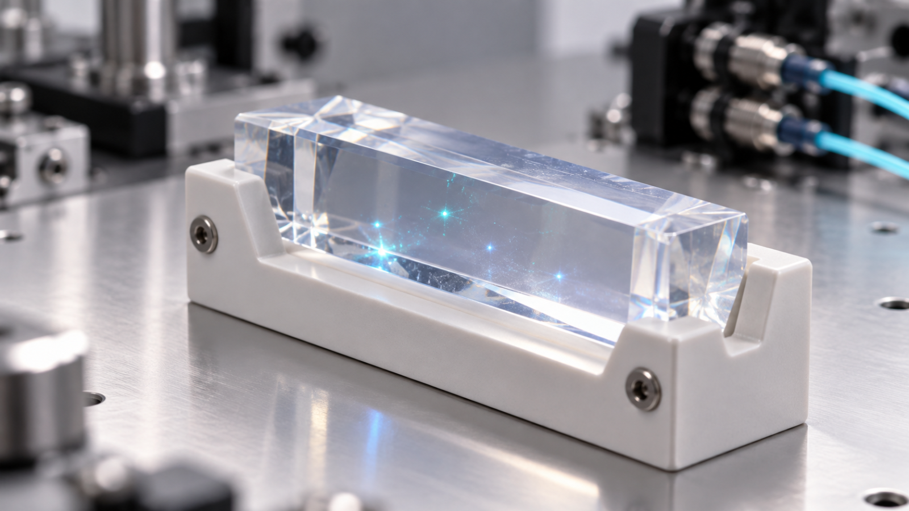
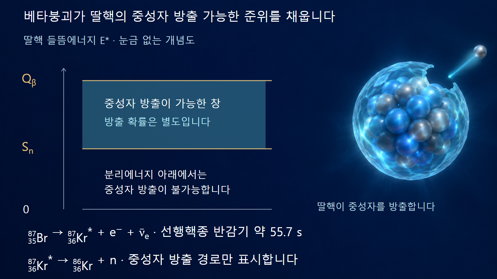
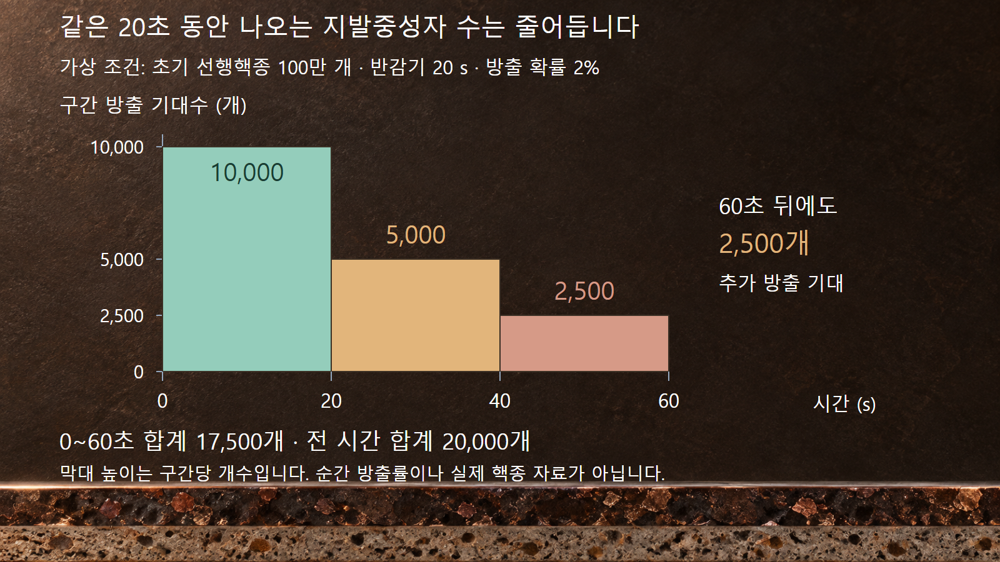

질량·에너지와 핵반응 · 037
즉발중성자와 지발중성자
늦은 탄생과 느린 이동을 구별하고 β의 분모를 확인합니다

지발중성자는 이미 만들어진 중성자가 천천히 빠져나오는 것이 아닙니다. 일부 핵분열생성물이 베타붕괴한 뒤 딸핵에서 중성자가 방출되므로, 중성자의 탄생 자체가 늦어집니다. 작은 지발 성분이 원자로의 시간응답에 큰 영향을 주는 이유도 이 대기시간에 있습니다.
1. 출생 시각과 이동 속도를 구분합니다
즉발중성자는 핵분열 뒤 들뜬 조각에서 매우 빠르게 방출됩니다. 대표적인 방출 시간척도는 약 10−14초 수준입니다. 반면 지발중성자는 특정 방사성 생성물이 먼저 붕괴해야 나올 수 있습니다. 방출된 뒤에는 다른 중성자처럼 자신의 에너지에 따른 속도로 움직이며 산란과 흡수에 참여합니다.
빠른 중성자가 물질에서 감속되어 열중성자가 되는 과정과 지발중성자가 만들어지는 과정은 다릅니다. 즉발중성자도 충분히 감속될 수 있고 지발중성자도 태어날 때 곧바로 열평형 상태인 것은 아닙니다. 즉발·지발은 주로 생성 경로와 시간의 구분이고, 고속·열은 에너지의 구분입니다. 같은 중성자에 두 분류를 함께 적용할 수 있습니다.
2. 선행핵종의 붕괴가 기다리는 시간을 만듭니다
대표적인 경로는 브롬-87의 베타붕괴입니다. 중성자가 양성자로 바뀌면서 전자와 전자 반중성미자가 나오고, 딸핵 크립톤-87이 들뜬 상태로 만들어질 수 있습니다. 그 들뜸이 중성자분리에너지보다 높으면 중성자를 방출하여 크립톤-86으로 갈 수 있습니다. 모든 베타붕괴가 이 경로를 선택하는 것은 아니며 감마선 방출 등과의 경쟁도 작용합니다.
반응의 핵종 변화는 8735Br → 8736Kr* + e− + ν̄e, 이어서 8736Kr* → 8636Kr + n으로 표시합니다. 별표는 들뜬 상태를 뜻합니다. 이때 지발중성자 선행핵종은 브롬-87이고, 실제로 중성자를 방출하는 들뜬 핵은 크립톤-87입니다. ENSDF 2015년 평가의 브롬-87 반감기는 55.68 ± 0.12초이며, 여기서는 약 55.7초로 읽습니다.
중성자 방출이 가능한 딸핵 상태가 형성된 뒤의 방출은 빠릅니다. 주된 지연은 선행핵종이 베타붕괴할 때까지의 확률적인 기다림입니다. 반감기가 55.7초라고 해서 모든 핵이 55.7초를 기다렸다가 한꺼번에 중성자를 내놓는 것도 아닙니다.

3. 예시 1 — β의 분모는 전체 핵분열중성자입니다
지발중성자 분율은 β = ν̄d/ν̄로 정의합니다. ν̄d는 핵분열당 평균 지발중성자 수, ν̄는 즉발과 지발을 합한 평균 중성자 수입니다. 따라서 지발중성자 수를 핵분열 사건 수로 나눈 값 자체가 β는 아닙니다. 고전적인 우라늄-235 열중성자 자료의 대표값 β ≈ 0.0065는 0.65%를 뜻합니다. 정밀값은 핵종·입사에너지·핵자료 평가에 따라 달라집니다.
설명을 위해 핵분열 100만 회, ν̄ = 2.40, β = 0.0065를 가정합니다. 전체 중성자 기대수는 240만 개이며, 그중 지발 성분은 2,400,000 × 0.0065 = 15,600개입니다. 즉발 성분은 2,384,400개이고, 사건당 지발수율은 15,600/1,000,000 = 0.0156개입니다. 이는 충분한 시간에 걸친 총 방출 기대량으로, 핵분열 직후의 순간 중성자 재고는 아닙니다.
| 양 | 정의 또는 예시 값 | 읽는 방법 |
|---|---|---|
| ν̄ | 가정값 2.40개/핵분열 | 전체 중성자 생성수 |
| ν̄d | 0.0156개/핵분열 | 지발 성분의 사건당 수율 |
| β | 0.0065 = 0.65% | 전체 생성 중성자 중 지발 비율 |
| βeff | 노심 조건에 따른 가중값 | 연쇄반응에 미치는 중요도를 반영 |
4. 유효 지발분율에는 중성자의 중요도가 들어갑니다
같은 중성자 하나라도 생성 위치와 에너지, 이동 방향에 따라 이후 핵분열에 기여할 가능성이 다릅니다. 노심 밖으로 누설되는 중성자와 핵분열을 이어가는 중성자의 역할이 같지 않기 때문입니다. 유효 지발중성자 분율 βeff는 이런 중요도를 반영한 양입니다. 단순히 방출 개수를 센 β와 개념적으로 구별해야 합니다.
따라서 특정 핵종의 대표 β를 실제 원자로의 βeff라고 바로 부르면 안 됩니다. 여러 핵종이 함께 핵분열하는 노심에서는 핵분열별 중성자 생성 기여도도 달라집니다. 연료 질량비만으로 단순 평균하거나, 모든 원자로에 0.0065를 고정 적용하는 방식은 적절하지 않습니다. 동특성 계산에 쓰는 값은 해당 노심의 핵자료와 공간·에너지 모델에 맞춰 정합니다.
5. 예시 2 — 한 선행핵종 집단에서 방출되는 시간 분포
실제 브롬 자료와 분리한 가상 예시로, 처음 선행핵종 100만 개가 있고 반감기가 20초라고 가정합니다. 각 붕괴가 중성자 하나를 만드는 확률 Pn은 2%이며, 새 생성·외부 유입·흡수·추가 붕괴사슬은 없다고 정합니다. 남은 선행핵종은 C(t) = C02−t/20, 그때까지 나온 중성자 기대수는 Nn(t) = PnC0(1 − 2−t/20)입니다. t의 단위는 초입니다.
첫 20초 동안 선행핵종 50만 개가 붕괴하므로 중성자는 기대값으로 10,000개가 나옵니다. 다음 20초에는 추가 25만 개가 붕괴하여 5,000개, 그 다음 20초에는 2,500개가 나옵니다. 60초까지 합계는 17,500개이고, 그 뒤에도 총 2,500개가 더 나올 것으로 기대합니다. 최종 기대량은 100만 × 0.02 = 20,000개입니다. 각 구간의 방출 개수와 초당 방출률은 다른 양입니다.
초기 중성자 방출률은 PnλC0 = 약 693개·s−1입니다. 여기서 λ = ln 2/20 s = 약 0.03466 s−1입니다. 첫 20초의 평균 방출률 10,000/20 = 500개·s−1가 초기값보다 작은 것은 그동안 선행핵종이 계속 줄기 때문입니다. 이 예시의 Pn = 2%는 전체 핵분열중성자에 대한 β = 0.65%와 분모가 다릅니다.

6. 여섯 군은 여섯 핵종이라는 뜻이 아닙니다
실제 연료에는 서로 다른 반감기와 중성자 방출 확률을 갖는 여러 선행핵종이 존재합니다. 이들을 하나씩 추적하는 대신 여러 유효 군으로 묶어 시간응답을 근사할 수 있습니다. 전통적인 6군 모형과 8군 모형은 서로 다른 반감기 성분을 이용하여 전체 방출곡선을 표현하는 방법입니다. 6군이라는 이름을 선행핵종이 정확히 여섯 개라는 뜻으로 읽지 않습니다.
운전 중에는 선행핵종이 계속 만들어지고 동시에 붕괴합니다. 출력 이력이 달라지면 같은 순간의 핵분열률에서도 남아 있는 선행핵종 재고가 달라질 수 있습니다. 그래서 기동·출력 변화·정지 뒤의 중성자 신호를 해석할 때 현재 핵분열률만 보지 않고 그 이전 생성 이력까지 고려합니다. 앞 절의 단일 집단 예시는 이 여러 성분 가운데 한 가지 시간척도만 보여 줍니다.
7. 작은 수가 시간응답에 큰 영향을 주는 이유
지발중성자를 통해 이어지는 일부 핵분열은 선행핵종의 붕괴시간을 거칩니다. 이 추가 대기시간 때문에 지발 성분이 중요한 운전 영역에서는 중성자 집단의 변화가 즉발 성분만으로 정해지는 경우보다 느려질 수 있습니다. 그러나 지발중성자가 있다는 사실만으로 모든 조건에서 출력 변화가 느리거나 안전하다고 결론내릴 수는 없습니다. 실제 응답은 반응도, 온도 피드백, 제어·보호 계통과 공간 효과를 함께 반영합니다.
정지 후의 지발중성자 신호와 붕괴열도 같은 양이 아닙니다. 전자는 특정 붕괴 경로에서 나오는 중성자 생성률이고, 후자는 여러 방사성 생성물의 에너지 방출과 침적에 따른 열입니다. 발생 계보는 관련되지만 한 신호를 다른 양으로 단순 환산하지 않습니다. 생성 경로, β의 분모, 선행핵종의 시간 분포를 구별하는 것이 두 중성자 집단을 이해하는 출발점입니다.